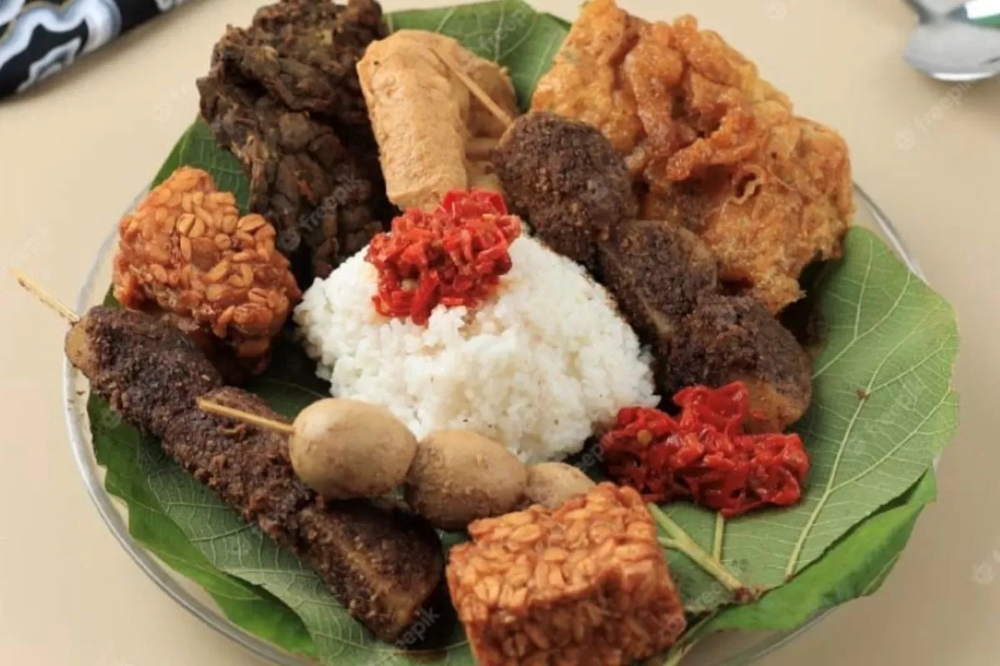
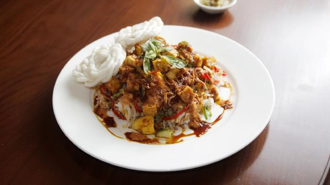
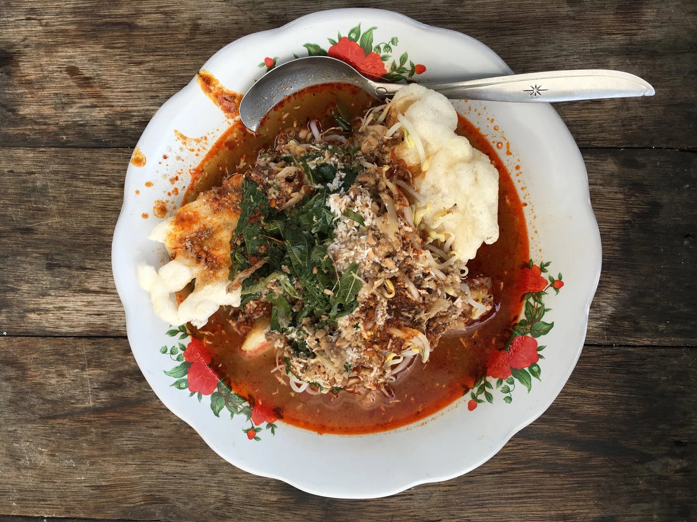
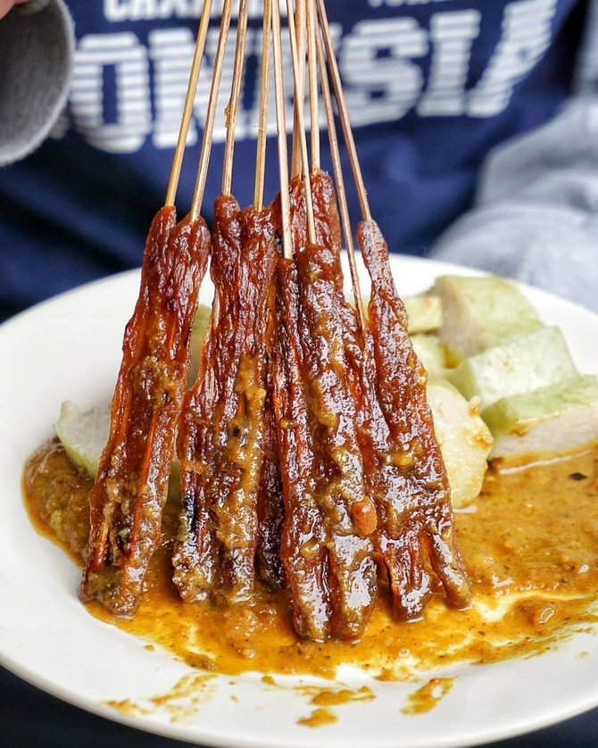

Empal Gentong
Empal gentong adalah makanan khas masyarakat Cirebon, Jawa Barat.
Empal gentong adalah makanan khas..

Sega Jamblang
Sega Jamblang atau Sega Jamblang dalam Bahasa Indonesia adalah makanan
khas dari Cirebon, Jawa Barat..

Sega Lengko
Nasi Lengko berasal dari Cirebon dan menyebar ke beberapa daerah di
pantai utara pulau Jawa, seperti:

Docang
Docang adalah makanan tradisional yang berasal dari Cirebon dan
sekitarnya yang terbuat dari potongan lontong..
 Mi Koclok
Mi Koclok
Ada dua versi tentang asal usul nama mi koclok. Pertama, mi koclok
berasal dari kata koclok yang berarti dikocok..
 Es Cuing
Es Cuing
Es cuing atau es cuwing adalah sejenis minuman penyegar yang terbuat
dari gel yang menyerupai agar-agar, bahan pembuatannya..
 Nasi Bogana
Nasi Bogana
Nasi bogana atau nasi begana dapat disebut pula dengan nasi ponggol..

Sate Kalong
Sate kalong adalah makanan khas Cirebon. Sate ini terbuat dari daging
kerbau yang dihaluskan dengan cara ditumbuk...
 Gado-gado Ayam
Gado-gado Ayam
Gado-gado pada umumnya berisi lontong dan sayuran yang disiram
menggunakan sambal kacang. Tapi ternyata ada juga..